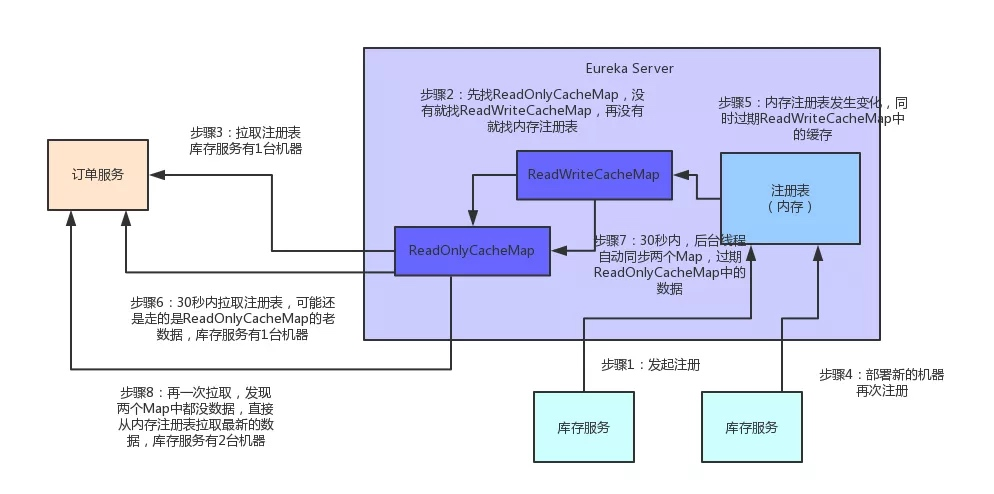

一、问题起源
Spring Cloud架构体系中，Eureka是一个至关重要的组件，它扮演着微服务注册中心的角色，所有的服务注册与服务发现，都是依赖Eureka的。
不少初学Spring Cloud的朋友在落地公司生产环境部署时，经常会问：
- Eureka Server到底要部署几台机器？
- 我们的系统那么多服务，到底会对Eureka Server产生多大的访问压力？
- Eureka Server能不能抗住一个大型系统的访问压力？
- 如果你也有这些疑问，别着急！咱们这就一起去看看，Eureka作为微服务注册中心的核心原理
下面这些问题，大家先看看，有个大概印象。带着这些问题，来看后面的内容，效果更佳
- Eureka注册中心使用什么样的方式来储存各个服务注册时发送过来的机器地址和端口号？
- 各个服务找Eureka Server拉取注册表的时候，是什么样的频率？
- 各个服务是如何拉取注册表的？
- 一个几百服务，部署上千台机器的大型分布式系统，会对Eureka Server造成多大的访问压力？
- Eureka Server从技术层面是如何抗住日千万级访问量的？
先给大家说一个基本的知识点，各个服务内的Eureka Client组件，默认情况下，每隔30秒会发送一个请求到Eureka Server，来拉取最近有变化的服务信息
举个例子：
库存服务原本部署在1台机器上，现在扩容了，部署到了3台机器，并且均注册到了Eureka Server上。
然后订单服务的Eureka Client会每隔30秒去找Eureka Server拉取最近注册表的变化，看看其他服务的地址有没有变化。
除此之外，Eureka还有一个心跳机制，各个Eureka Client每隔30秒会发送一次心跳到Eureka Server，通知人家说，哥们，我这个服务实例还活着！
如果某个Eureka Client很长时间没有发送心跳给Eureka Server，那么就说明这个服务实例已经挂了。
光看上面的文字，大家可能没什么印象。老规矩！咱们还是来一张图，一起来直观的感受一下这个过程。
二、Eureka Server设计精妙的注册表存储结构
现在咱们假设手头有一套大型的分布式系统，一共100个服务，每个服务部署在20台机器上，机器是4核8G的标准配置。
也就是说，相当于你一共部署了100 * 20 = 2000个服务实例，有2000台机器。
每台机器上的服务实例内部都有一个Eureka Client组件，它会每隔30秒请求一次Eureka Server，拉取变化的注册表。
此外，每个服务实例上的Eureka Client都会每隔30秒发送一次心跳请求给Eureka Server。
那么大家算算，Eureka Server作为一个微服务注册中心，每秒钟要被请求多少次？一天要被请求多少次？
- 按标准的算法，每个服务实例每分钟请求2次拉取注册表，每分钟请求2次发送心跳
- 这样一个服务实例每分钟会请求4次，2000个服务实例每分钟请求8000次
- 换算到每秒，则是8000 / 60 = 133次左右，我们就大概估算为Eureka Server每秒会被请求150次
- 那一天的话，就是8000 * 60 * 24 = 1152万，也就是每天千万级访问量
好！经过这么一个测算，大家是否发现这里的奥秘了？
- 首先，对于微服务注册中心这种组件，在一开始设计它的拉取频率以及心跳发送频率时，就已经考虑到了一个大型系统的各个服务请求时的压力，每秒会承载多大的请求量。
- 所以各服务实例每隔30秒发起请求拉取变化的注册表，以及每隔30秒发送心跳给Eureka Server，其实这个时间安排是有其用意的。
按照我们的测算，一个上百个服务，几千台机器的系统，按照这样的频率请求Eureka Server，日请求量在千万级，每秒的访问量在150次左右。
即使算上其他一些额外操作，我们姑且就算每秒钟请求Eureka Server在200次~300次吧。
所以通过设置一个适当的拉取注册表以及发送心跳的频率，可以保证大规模系统里对Eureka Server的请求压力不会太大。
关键问题来了，Eureka Server是如何保证轻松抗住这每秒数百次请求，每天千万级请求的呢？
要搞清楚这个，首先得清楚Eureka Server到底是用什么来存储注册表的？三个字，看源码
接下来咱们就一起进入Eureka源码里一探究竟：
- 如上图所示，图中的这个名字叫做registry的CocurrentHashMap，就是注册表的核心结构。看完之后忍不住先赞叹一下，精妙的设计！
- 从代码中可以看到，Eureka Server的注册表直接基于纯内存，即在内存里维护了一个数据结构。
- 各个服务的注册、服务下线、服务故障，全部会在内存里维护和更新这个注册表。
- 各个服务每隔30秒拉取注册表的时候，Eureka Server就是直接提供内存里存储的有变化的注册表数据给他们就可以了。
- 同样，每隔30秒发起心跳时，也是在这个纯内存的Map数据结构里更新心跳时间。
一句话概括：维护注册表、拉取注册表、更新心跳时间，全部发生在内存里！这是Eureka Server非常核心的一个点。
搞清楚了这个，咱们再来分析一下registry这个东西的数据结构，大家千万别被它复杂的外表唬住了，沉下心来，一层层的分析！
- 首先，这个ConcurrentHashMap的key就是服务名称，比如“inventory-service”，就是一个服务名称。
- value则代表了一个服务的多个服务实例。
举例：比如“inventory-service”是可以有3个服务实例的，每个服务实例部署在一台机器上。
再来看看作为value的这个Map：Map>
- 这个Map的key就是服务实例的id
- value是一个叫做Lease的类，它的泛型是一个叫做InstanceInfo的东东，你可能会问，这俩又是什么鬼？
首先说下InstanceInfo，其实啊，我们见名知义，这个InstanceInfo就代表了服务实例的具体信息，比如机器的ip地址、hostname以及端口号。
而这个Lease，里面则会维护每个服务最近一次发送心跳的时间
三、Eureka Server端优秀的多级缓存机制
假设Eureka Server部署在4核8G的普通机器上，那么基于内存来承载各个服务的请求，每秒钟最多可以处理多少请求呢？
多级缓存机制的优点是什么？
- 尽可能保证了内存注册表数据不会出现频繁的读写冲突问题。
- 并且进一步保证对Eureka Server的大量请求，都是快速从纯内存走，性能极高。
为方便大家更好的理解，同样来一张图，大家跟着图再来回顾一下这整个过程：

四、总结
通过上面的分析可以看到，Eureka通过设置适当的请求频率（拉取注册表30秒间隔，发送心跳30秒间隔），可以保证一个大规模的系统每秒请求Eureka Server的次数在几百次。
同时通过纯内存的注册表，保证了所有的请求都可以在内存处理，确保了极高的性能
另外,多级缓存机制，确保了不会针对内存数据结构发生频繁的读写并发冲突操作，进一步提升性能。
上述就是Spring Cloud架构中，Eureka作为微服务注册中心可以承载大规模系统每天千万级访问量的原理。